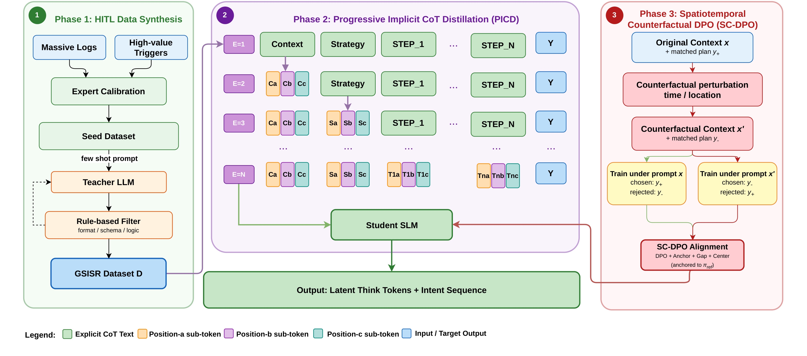
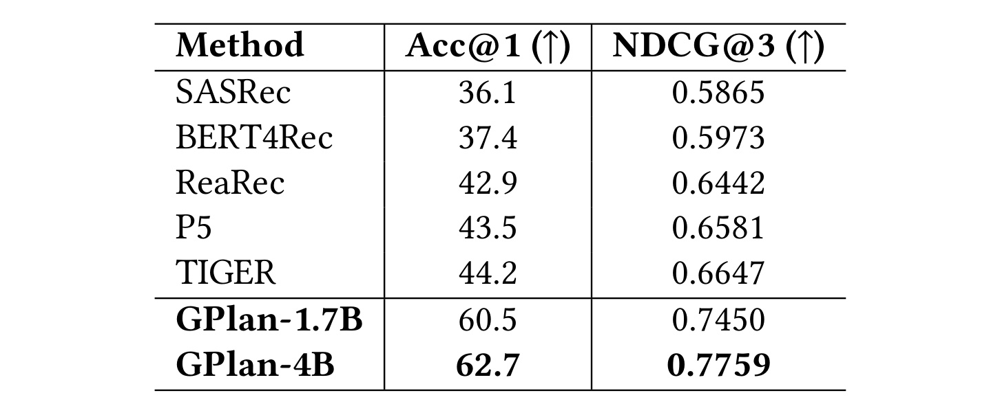
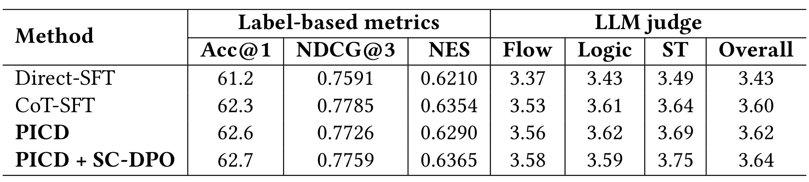
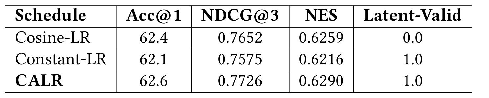
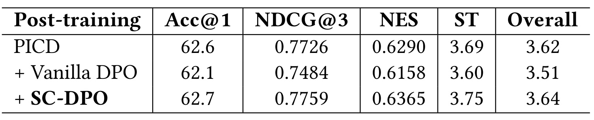
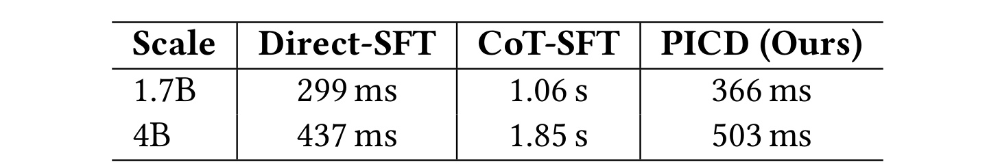

Generative Spatiotemporal Intent Sequence Recommendation via Implicit Reasoning in Amap
论文信息：Sicong Wang、Ruiting Dong、Yue Liu、Bowen Zheng、Jun Meng、Jie Li、Shuaijun Guo、Yu Gu、Fanyi Di、Xin Li，AMAP, Alibaba Group，2026-05-27 提交，主类别为推荐算法。论文入口：arXiv:2605.28888。代码与数据状态：论文摘要声明实现和匿名 GSISR 数据集可用；本轮只看到 GitLink 镜像线索与论文内声明，未独立打开核验原始 GitHub，因此下面不把代码仓库写成已核验事实。
这篇论文把高德地图首页推荐里的“推荐一张卡片”推进到“生成一串可执行意图”。它关注的不是用户会不会点击某个候选，而是当用户处在跨城出行、酒店订单、当前位置、时间段等上下文里，系统能否给出一个顺序合理、参数能落到真实地点和工具上的服务计划。GPlan 的核心做法是先用大模型和人审规则合成带推理链的意图序列数据，再把显式推理压缩进轻量模型的潜在 token，最后用反事实时空上下文训练模型在环境变化时改变计划。
1. 背景和问题
移动地图首页的推荐和普通内容流推荐不完全一样。内容推荐里，一个 item 往往可以被近似看成独立候选：用户看不看、点不点、停留多久，主要由用户画像、内容语义、上下文和排序分共同决定。地图首页里的服务卡片却带有更强的工具属性。论文把 intent 定义成对高德首页工具的一次参数化调用，例如打车工具需要起点和终点，酒店相关工具需要订单状态和酒店位置，周边餐饮工具需要一个空间锚点。card 是这些工具返回结果后的 UI 表面。也就是说，GPlan 生成的是一串 intent，生产系统再把它们渲染成卡片。
这个设定让推荐问题从“挑出最可能点击的下一项”变成“在时空约束下生成一段服务生命周期”。论文给出的跨城旅行例子很典型：用户已经订了 B 城酒店，15:00 刚落地 B 城机场。一个合理的序列可能是先打车去酒店，再提醒酒店入住，然后推荐酒店附近餐饮和休闲场所，最后给出全城景点。这里第二、三、四步并不是独立 item，它们依赖第一步打车目的地这个空间锚点。如果系统仍然在机场附近打分餐饮或公交卡片，即便每个单点候选本身不差，整个序列也会出现物理执行上的错位。
论文把这类任务命名为 Generative Spatiotemporal Intent Sequence Recommendation，简称 GSISR。它要求输出序列同时满足两层约束：第一，逻辑上连贯，后续意图要接住前一个意图产生的状态，例如“到酒店”之后再围绕酒店推荐；第二，物理上可执行，工具参数、地点范围、时间段和订单状态不能互相冲突。传统 sequential recommendation 更擅长建模行为序列里的转移概率，SASRec、BERT4Rec 一类模型可以学习短期和长期依赖，但它们通常预测下一个 item 或 next atomic intent，难以显式生成带参数的服务计划。生成式推荐如 P5、TIGER 能把推荐转成文本或语义 ID 生成，但论文认为它们仍然偏向 item 或 ID 层面的生成式检索，没有直接处理一组互相依赖的工具调用。
直接使用 LLM 看起来能解决一部分问题，因为大模型可以读上下文、做链式推理、输出 JSON 计划。但论文把工业部署困难拆成两个更具体的问题。第一个是计算瓶颈。显式 Chain-of-Thought 会让模型先生成长推理文本，再生成最终计划，在地图首页这种实时推荐场景里，额外 token 延迟很难接受。第二个是时空幻觉。通用大模型知道“落地后可能去酒店”，但未必知道高德首页工具库有哪些、某个地点/订单/时间状态下哪些参数合法，也可能把另一个上下文中的合理计划搬到当前用户身上，生成看似通顺但实际不可执行的行程。
GPlan 的目标不是把大模型原样搬到线上，而是让轻量 student model 学到“大模型级规划逻辑”并保留生产延迟。论文提出两个核心模块：Progressive Implicit CoT Distillation，简称 PICD，把 teacher LLM 的结构化推理块逐步压缩成固定长度的潜在 think token；Spatiotemporal Counterfactual DPO，简称 SC-DPO，用原始上下文和反事实上下文构造双向偏好对，让模型知道同一个用户在不同时间、地点、城市或节假日状态下应当切换计划。一个模块解决“怎样快”，一个模块解决“怎样对当前时空敏感”。
我认为这篇论文最值得看的地方是，它没有把推荐系统和大模型的结合停留在“用 LLM 增强语义理解”。它把 LLM 的角色放在数据合成、推理蒸馏和偏好对齐上，最后服务的仍然是一个可上线的小模型。对于推荐工程来说，这个取向更接近真实系统：线上模型需要稳定延迟、固定 schema、可被规则检查的参数和能承接现有工具库的输出格式。对于大模型应用来说，GPlan 也提供了一个可迁移范式：如果显式推理太慢，可以先让大模型产生可审计的推理轨迹，再把推理能力内化到小模型的潜在表示里，并通过反事实偏好对齐让它对关键上下文变量有响应。
但问题也随之变得更难评估。GSISR 的离线标签来自人审种子、teacher 生成和规则过滤，离线准确率衡量的是模型对 curated target 的恢复能力，不能完全等价于真实用户价值。论文也意识到这一点，所以后面引入 LLM judge 和线上 A/B。这个边界很重要：在地图首页里，一个计划是否“好”不只取决于和 teacher 输出是否一致，还取决于用户当时是否真的需要、卡片是否打扰、工具参数是否能被下游服务正确消费，以及线上 CTR lift 是否来自序列规划而不是流量切片或 UI 曝光变化。后续读这篇论文时，应把它看成一个工业意图序列生成框架，而不是单纯的离线推荐模型排行榜。
2. 方法
2.1 GSISR任务建模与HITL数据合成
论文先把任务形式化为从上下文到参数化意图序列的生成。输入空间写成 X = {u, H, s, E}，其中 u 是用户画像，H 是交互历史，s 是时空上下文，E 是 intent library。输出空间是长度为 n 的结构化序列 Y = {a1, a2, ..., an}，每个 intent ak = (vk, pk)，vk 是来自工具库 E 的工具，pk 是该工具所需参数。这个定义的关键在于“参数化”：如果只是预测工具名，那么“打车”这个 intent 只能说明类型；如果连起点、终点、酒店位置、附近范围和时间状态一起生成，系统才有机会真正把 plan 渲染成可执行卡片。
论文的基础训练目标是最大化 curated target sequence 的生成似然：
符号解释：X 是包含用户画像、历史、时空上下文和工具库的输入；Y 是序列化后的目标意图计划；D 是经过合成和过滤得到的数据集；yt 是序列化计划中的第 t 个 token；T 是序列长度；θ 是生成模型参数。这个公式看起来像普通自回归训练，但它的训练样本不是原始点击序列，而是经过工具 schema、参数依赖和逻辑规则校验的意图计划。因此，模型学到的不是“下一个最常见卡片”，而是在给定上下文下恢复一段被认为可执行的服务计划。
数据合成是 GPlan 方法里很容易被低估的一部分。真实 LBS 日志虽然海量，但稀疏、噪声高，而且很难直接提供“为什么这串服务顺序合理”的监督。论文设计了 Human-in-the-loop pipeline。第一步从大规模日志中抽取 high-value triggers，例如跨城到达、活跃打车订单、酒店订单这类能暗示多步服务需求的模式。第二步由高德领域专家对轨迹做逻辑校准，得到 1000 条 Intent-Environment-Logic 种子 triplet。第三步使用 Qwen3-235B-A22B 作为 teacher，在 few-shot prompt 中放入这些种子，让 teacher 基于用户 profile u 和时空上下文 s 自回归生成结构化 reasoning path R 与 intent sequence Y。
teacher 生成后并不直接进入训练集，而是经过规则过滤。过滤有三层：format checks 检查 JSON 可解析和计划长度有效；schema checks 检查每个 intent 是否来自固定工具库、必需参数是否存在、枚举字段是否落在允许取值；logic invariants 检查参数引用是否能解析到前序 producer intent，并限制互斥 travel-class intent 的数量，例如每个序列最多一次打车调用。论文报告在合成候选中有 28.9% 被移除，最终留下 100K 样本 D。这说明 GPlan 的“智能”不是单独来自模型，也来自一套把业务约束变成数据过滤器的工程过程。
这套数据合成方式给训练带来两个后果。积极的一面是，模型可以在一个比原始日志更干净的空间里学习计划结构，尤其是跨 intent 的参数依赖，例如后续餐饮推荐要围绕前面的酒店目的地。风险的一面是，大多数训练和离线评估目标是 teacher-generated，而非真实用户显式标注。论文因此把离线指标解释为 teacher-aligned planning fidelity 和 dataset-defined feasibility，而不是独立的用户满意度证明。这个措辞比较克制，也提示复现者不能只拿离线 Acc@1 或 NDCG@3 就宣称推荐收益。
把这套建模放回首页推荐链路，可以看到作者实际在重新定义排序系统的输入输出接口。普通排序模型往往接收用户、候选和上下文特征，然后对候选打分；GPlan 的输入里显式包含 intent library E，输出里包含工具名和参数，这相当于让模型在候选生成之前就参与“应该调用哪个服务、服务之间如何接续”的决策。它更像一个 planner，而不是末端 ranker。这样做的好处是，跨卡片依赖可以被统一建模，例如第一张卡片决定目的地后，后续 POI 范围可以重定位；代价是模型输出必须被更严格地约束，因为任何参数错误都会传导到工具调用和 UI 渲染。
这里的人审种子也不仅是少量标注样本。它们承担了把业务专家知识注入 teacher prompt 的作用。高德专家校准的是 Intent-Environment-Logic triplet，里面至少包含三类信息：用户当时处在什么环境，哪个 intent 是服务链条里的锚点，后续 intent 如何依赖这个锚点。teacher 生成时以这些 triplet 作为 in-context examples，相当于把“跨城到达后先解决确定性交通需求，再围绕目的地展开本地服务”这类业务逻辑变成可扩展模板。规则过滤则负责把模板扩展后的错误样本删掉。对其他公司来说，这一步很难完全复制，因为不同应用的工具库、互斥约束和参数引用方式都不一样；但流程本身可迁移，即先把少量专家流程写成结构化种子，再让大模型扩增，再用确定性规则把不合规输出挡掉。
另一个容易忽略的点是，GPlan 的数据合成同时服务 PICD 和 SC-DPO。PICD 需要 teacher 输出 reasoning path R，否则没有显式块可压缩；SC-DPO 需要每个上下文都能得到 filter-passed matched plan，否则反事实 pair 会混入格式错误或逻辑错误的响应。也就是说，HITL 数据合成不是论文的前处理附属品，而是后续两个核心模块的共同底座。如果数据中没有清楚的上下文、策略、逐步 intent 理由，PICD 的 latent token 只能学到模糊前缀；如果数据中没有时空变量可控的 matched plan，SC-DPO 也无法区分“当前上下文不匹配”和“计划本身低质量”。
2.2 PICD：把显式推理块压缩成潜在think token
GPlan 的第一条主线是 Progressive Implicit Chain-of-Thought Distillation。teacher 生成的 reasoning path R 被组织成三个语义块类型：〈CONTEXT〉负责分析当前上下文和潜在需求，〈STRATEGY〉负责给出核心规划策略，〈STEP_i〉负责解释第 i 个 intent 为什么被推荐。显式 CoT 对 teacher 生成高质量计划有帮助，因为它强迫模型先识别出“用户刚到机场、有酒店订单、下一步最确定的服务是去酒店”这样的中间状态，再输出 JSON 计划。但如果 student 在线上也要生成这些文字，延迟会直接爆炸。
PICD 的做法不是删掉 reasoning，而是把每个完整语义块替换成 K 个保留特殊 token，并保留外层 〈THOUGHT〉包装。论文主实验设 K = 3。完全潜在化后的前缀写成：
符号解释：Φ(R) 是结构化推理路径 R 被压缩后的潜在前缀；C = (ca, cb, cc) 表示 context block 的三枚保留 token；S = (sa, sb, sc) 表示 strategy block 的三枚保留 token；Ti = (ti,a, ti,b, ti,c) 表示第 i 个 step block 的三枚保留 token；|Y| 是目标计划长度。直觉上，三个 token 不是随便缩短文本，而是给每个推理块保留一个小容量槽位：在 step block 中，它们共同承载工具选择、参数赋值和与前一 intent 的连接；在 context 和 strategy 中，它们承载时空状态和整体规划理由。

Figure 1 把整套方法画成三段。左侧绿色区域是 HITL Data Synthesis：从 Massive Logs 中抽取 high-value triggers，经专家校准成 seed dataset，再由 teacher LLM 生成候选，最后用 format、schema、logic 三类规则过滤，得到 GSISR Dataset D。中间紫色区域是 PICD：在 E=1 时，模型还面对显式 Context、Strategy、STEP_1 等文本块；到 E=2 时，Context 被替换成 Ca/Cb/Cc；到 E=3 时，Strategy 也被替换成 Sa/Sb/Sc；继续推进后，每个 STEP_i 也变成 Tia/Tib/Tic。右侧红色区域是 SC-DPO：原始上下文 x 和反事实上下文 x' 分别配上各自 matched plan，并在两个 prompt 下反向构造 chosen/rejected。底部绿色输出条说明线上 student 最终只需要发出 latent think tokens 和 intent sequence。这个图的价值在于，它明确了 GPlan 不是把 teacher 的自然语言推理直接压缩成一个不可控向量，而是保留了 block 顺序、block 类型和 step 数量，使 student 的隐式推理接口仍可被结构化诊断。
潜在块数量随计划长度变化。论文写成：
符号解释：B 是一个样本需要压缩的 reasoning block 总数；常数 2 对应 〈CONTEXT〉和 〈STRATEGY〉；|Y| 对应每个输出 intent 的 〈STEP_i〉。这个公式简单但关键，因为不同用户场景会有不同长度的计划。如果固定 padding 到最大长度，短计划会被迫学习多余潜在槽位；如果忽略长度差异，压缩课程会在不同样本上失去同步。GPlan 动态跟踪每个样本的 B，让短计划更早进入 fully implicit phase，长计划则继续保留部分显式 step 文本直到压缩完成。
从训练/推理差异看，PICD 的设计很适合工业推荐。训练时 student 仍然看见 teacher reasoning 的结构，只是这些结构被逐步替换为特殊 token；推理时 student 不再输出长文本 reasoning，而是输出固定结构的潜在前缀和 JSON plan。这样做的收益是降低 token 生成长度，风险是潜在 token 可能学成空壳或乱序 token。论文后面专门定义 Latent-Structure Validity，检查输出是否只有一个 〈THOUGHT〉块、latent token 是否遵循 C、S、T1...T|Y| 的顺序、是否残留 raw XML tag、step 数是否等于 JSON plan 长度。这说明作者没有只看 JSON 是否能被解析，也关心隐式接口本身是否还存在。
2.3 渐进压缩、CALR与分段归一化损失
PICD 不是一步把所有 CoT 文本替换成 latent token，而是按 forward progressive schedule 做课程学习。训练跨 N 个 epoch 推进，压缩顺序是 〈CONTEXT〉、〈STRATEGY〉、〈STEP_1〉、〈STEP_2〉，一直到后续 step。论文用 b(e) 表示 epoch e 开始时已经被压缩的 leading blocks 数量。训练分成三种状态：初始阶段 b = 0，完整复制 full-text CoT；渐进阶段 0 < b < B，前 b 个块变成 latent triplets，剩余块仍然保留文本；fully implicit 阶段 b ≥ B，全部 reasoning prefix 都以潜在形式出现。这个顺序符合计划构造过程：先理解用户和环境，再确定策略，再展开具体 intent。
这个课程带来一个优化上的非平稳问题。随着 b 增大，预测目标在变：同一个位置原来要预测自然语言，现在要预测 reserved token；同一个计划的前缀长度和语义载体也在变。如果使用普通全程 cosine decay，学习率可能在 latent scaffold 还没学稳时就已经下降，模型会出现 repeated triplets、missing tokens、out-of-order sequences 等结构错误。反过来，如果全程 constant LR，结构能稳定，但后期缺少低学习率的语义精修阶段，JSON plan 的细节可能不够好。
CALR 的公式如下：
符号解释：η(t) 是训练步 t 的学习率；g(t) 是当前全局压缩阶段；B* 是学习率切换目标，论文设为训练集中 B 的经验 p90，即 9；t* 是首次进入 refinement 的步；ηstruct 大于 ηpolish，主实验为 5×10^-6 和 1×10^-6。公式的含义是：在大多数样本还没见过完整 latent prefix 前，先用较高学习率学会特殊 token 的结构和顺序；当 g(t) 超过 B* 后，说明绝大多数样本已经经历过 fully latent prefix，再切到较低的 cosine 精修 JSON plan。它不是普通 schedule 调参，而是把学习率状态和压缩课程状态绑在一起。
PICD 还需要处理 loss 权重漂移。随着显式 CoT 被压缩，CoT 部分 token 数减少，如果直接对所有 token 做标准 cross entropy，JSON plan 在总 loss 中的相对权重会随阶段变化。论文用 section-normalized training loss，把 CoT 与 JSON 两段分别求均值，再等权组合：
符号解释：Lcot 是当前 active CoT section 的平均 token loss，Ljson 是 JSON plan section 的平均 token loss，L 是总监督损失。这个公式保证不管前缀里还有多少显式推理文本，JSON 计划都保持固定 section-level 权重。对于 GSISR 来说这很重要，因为线上真正被生产栈消费的是 JSON intent sequence；如果课程后期 latent token 变短导致 JSON 权重无意变化，模型可能在“保住潜在结构”和“生成有效计划”之间出现不稳定折中。
从工程角度看，PICD 的输入输出链路可以拆成四步。第一，teacher 负责生成带结构化推理的高质量样本，不要求 teacher 线上服务。第二，student 在训练中逐渐把每个推理块对应到固定 token scaffold，保持 CoT 的模块顺序。第三，CALR 与 section-normalized loss 让压缩过程不要破坏结构，也不要丢掉 JSON 监督。第四，推理时只让 student 生成短 latent prefix 和 JSON plan，避免长 CoT 解码成本。这个流程里的每个设计都围绕“推理能力内化但输出协议不失控”展开，而不是单纯追求小模型拟合 teacher 文本。
2.4 SC-DPO：围绕反事实上下文构造偏好对
监督微调能让模型学会基本用户理解、轨迹解释和计划生成，但它未必强制模型对时空变量敏感。论文举的隐含问题是：同一个用户在工作日早高峰、周末夜晚、当前位置迁移、跨城订单激活等状态下，应得到明显不同的意图序列；如果训练目标只让模型复现静态样本，模型可能学到一个“通用好计划”，而不是“与当前 context 匹配的计划”。SC-DPO 试图补上这层条件依赖。
反事实对构造从一个 anchor sample 出发。论文构造原始上下文 x 和反事实上下文 x'。二者共享用户画像、长期行为摘要和主要历史，只改动时空变量，例如当前时间、当前位置、当前城市、weekday/weekend flag 或 holiday flag。每个上下文都配有 teacher 生成并通过过滤的 matched plan。然后作者把 pair materialize 成双向偏好：在 prompt x 下，x-matched plan 记为 chosen y+，x'-matched plan 记为 rejected y-；在 prompt x' 下，比较方向反过来，x'-matched plan 成为 chosen，x-matched plan 成为 rejected。
这个双向构造比普通负采样更细。y- 不是一个全局低质量响应，它在 x' 下完全可能是正确计划，只是在 x 下时空不匹配。比如酒店附近餐饮推荐对于“已经到酒店”的用户合理，但对于“刚落地机场且还没去酒店”的用户就可能早了一步或空间锚点错误。如果普通 DPO 把 y- 当成绝对差答案，不断压低 πθ(y-|x)，模型会学到“远离这种计划”而不是“在当前 context 中不要选它”。SC-DPO 的损失设计就是围绕这个区别展开：它希望偏好差距为正，但不要无限扩大；希望提升匹配响应，但不要破坏 SFT 期间学到的通用规划能力。
论文先定义相对 reference policy 的 reward shift。令 πref 为 SFT 模型，πθ 为正在优化的模型，βDPO 为温度：
符号解释：r+ 是 chosen response y+ 在当前 policy 相对 reference policy 下的奖励位移；πθ(y+|x) 是优化中模型对匹配计划的概率；πref(y+|x) 是 SFT reference 对同一计划的概率；βDPO 控制位移尺度。r+ 不直接表示计划绝对好坏，而表示后训练相对 SFT 是否提高了 matched plan 的偏好。
符号解释：r- 是 context-mismatched response y- 的相对位移。注意 y- 的语义身份是“对当前 x 不匹配”，不是“永远错误”。如果训练让 r- 大幅下降，可能牺牲这个 plan 在另一个上下文 x' 下的可用性，也可能破坏模型对类似服务序列的通用生成能力。
2.5 参考锚定的SC-DPO目标与推理链路
在 r+ 和 r- 之上，SC-DPO 首先保留 DPO preference term：
符号解释：σ 是 sigmoid 函数；r+ - r- 是匹配计划相对不匹配计划的 margin；LDPO 鼓励在同一 prompt x 下 y+ 的相对奖励高于 y-。这一项提供局部偏好信号，让模型知道 context 变了，计划也应变。
但只用 LDPO 会鼓励无限拉大 gap。为了保护 SFT 获得的 matched-response 能力，论文加入 reference anchor：
符号解释：δ 是 anchor margin，主实验设为 0；Lanchor 惩罚 r+ 低于 δ 的情况，也就是不允许后训练显著降低匹配计划相对 reference 的概率。它的直觉是，模型可以通过压低 y- 来赢 DPO，但不能为了赢 margin 把正确计划 y+ 也带偏。
接着论文定义 preference margin 与 pair-level center：
符号解释：gap 衡量当前上下文下 matched plan 与 mismatched plan 的相对差距；center 衡量这一对响应整体相对 reference policy 的平均漂移。gap 需要为正，但过大意味着模型可能把 y- 压得过低；center 需要接近目标 m，主实验 m = 0，表示整体不要远离 SFT reference。
对应的 bounded margin 与 centered drift 项为：
符号解释：γℓ 与 γh 定义希望 margin 落入的区间；Lgap,ℓ 防止偏好差距不足，Lgap,h 防止偏好差距过大；Lcenter 防止这一对响应整体向上或向下漂移太多。论文主实验中 gap range 为 [0.10, 0.20]，lower-bound 权重更大，upper-bound 权重较小，说明作者更担心模型没有学到上下文区分，但同时保留对过度打压 y- 的限制。
最终目标把这些项组合起来：
符号解释：λa、λg,ℓ、λg,h、λc 是各正则项权重。LDPO 让模型选择当前上下文匹配的计划；Lanchor 保护 matched response；两个 gap 项把偏好强度限制在区间内；Lcenter 让整体 reward drift 靠近 reference。这个目标的设计核心是“上下文条件偏好”，不是“绝对喜欢/讨厌某个答案”。在时空推荐里，这点很重要，因为同一组工具调用可能在不同城市、时间或订单状态下从合理变成不合理，也可能反过来。
从 loss 形态看，SC-DPO 实际把推荐系统里常见的 counterfactual sensitivity 做成了语言模型偏好学习问题。传统特征工程里，如果当前城市、POI、订单状态变化，排序模型通常依靠特征交叉或树模型分裂来改变分数；在生成式计划里，输出空间是整段文本化 JSON，不能只调一个候选分数。r+、r-、gap 和 center 的设计相当于在序列概率空间里约束这种变化：匹配计划要相对更可能，但不匹配计划不能被推成全局不可用。这个区别对多场景共享模型很重要，因为同一个 intent 组合在机场、酒店、商圈、通勤路线上会频繁变换角色。
SC-DPO 也给在线系统留下了比较清晰的调参旋钮。βDPO 控制偏好更新的尺度，γℓ 和 γh 控制模型区分两个计划的强度区间，λa 决定多强地保护 SFT matched response，λc 决定整体 reward drift 是否贴近 reference。论文主实验把 anchor margin δ 设为 0，把 center target m 设为 0，说明作者希望后训练主要学习相对偏好，而不是整体抬高或压低两条响应。如果线上发现模型过于保守，可以考虑放宽 gap 上界或降低 center 权重；如果发现模型对反事实扰动过敏，频繁因为小的时间/位置变化切换整个计划，则应收紧 gap 区间或提高 reference 约束。这些方向论文没有展开，但从目标函数可以推出来。
推理阶段还要注意 latent prefix 和 JSON plan 的边界。PICD 让 student 先吐出潜在 think tokens，再吐出 intent sequence；生产栈真正消费的是后者。潜在 token 的作用更像一个内部工作区，帮助模型在解码 JSON 前先完成上下文压缩和策略选择。它不应该被下游业务直接解释，也不应该暴露给用户。可观测性应落在两个层面：一是 Latent-Valid 这类结构诊断，确保内部协议不坏；二是 JSON schema 和业务规则校验，确保外部调用可执行。如果只检查 JSON 可解析，可能漏掉 latent scaffold 退化；如果只检查 latent token 顺序，可能忽略工具参数错误。GPlan 的方法隐含了这两层监控都要做。
把 PICD 和 SC-DPO 合起来看，它们解决的是两个不同时间尺度的问题。PICD 在训练期间把 teacher 的长推理过程压缩到 student 的短前缀里，目标是让每次请求少生成 token；SC-DPO 在后训练期间让 student 对时空变量变化形成条件偏好，目标是让同一用户换场景时计划也换。前者更偏系统效率，后者更偏推荐相关性。如果只做 PICD，模型可能很快但仍输出泛化模板；如果只做 SC-DPO 而不压缩 CoT，模型可能更懂上下文但无法满足首页延迟。GPlan 的实验设计也基本按这个分工组织：Table 5 看效率，Table 4 看偏好对齐，Table 3 看隐式接口稳定性。
训练完 PICD 和 SC-DPO 后，线上路径相对简单：输入当前用户画像、历史、时空上下文和工具库提示，student 生成 latent think tokens 与 JSON intent sequence，生产栈再根据 intent 调用工具并渲染 card。显式 teacher reasoning、规则过滤和反事实对构造都留在离线训练阶段。这个 separation of concerns 是 GPlan 能落地的关键：业务规则负责数据清洗和输出校验，大模型负责生成高质量 reasoning seed，student 负责低延迟推理，SC-DPO 负责让 student 对时空变量变化保持敏感。
方法的可迁移性也可以从这里看出来。对其他推荐系统，如果输出只是 item ID，PICD 的价值可能有限；但如果输出是“搜索/推荐/工具调用/内容生成”的组合计划，显式推理太慢且线上又需要小模型，那么 GPlan 的训练模式值得借鉴。关键前提有三个：必须能定义结构化 reasoning block，否则 latent token 没有清晰语义槽；必须能构造可规则过滤的输出 schema，否则 teacher 生成会把噪声灌进数据集；必须能找到业务上有意义的反事实变量，例如时间、地点、设备、库存、会员状态、订单状态，否则 SC-DPO 的 preference pair 只是普通负采样。
从实现视角再拆一层，GPlan 实际把推荐链路里的“候选生成、排序、重排、解释”边界重新混合了。传统链路可能先由召回给出工具卡片或 POI 候选，再由排序模型决定曝光顺序；GPlan 则先生成一个 plan skeleton，里面已经包含服务顺序和部分参数，再让生产栈调用具体工具返回内容。这要求模型输出的 JSON 有稳定 schema，也要求下游工具能够容忍模型给出的参数粒度。比如“food near the hotel”在论文例子里是一个合理 intent，但真实系统还要决定半径、类目、预算、营业时间、是否与用户历史偏好冲突。GPlan 论文没有把这些下游重排细节全部展开，因此读者应把它理解为首页 agent 的高层意图规划器，而不是完全替代所有 POI 排序和业务规则。
还有一个方法上的隐含假设是，teacher reasoning 的结构与 student latent scaffold 之间存在可学习对应。PICD 选择 K = 3，不是动态估计每个 reasoning block 的复杂度，这会带来容量折中。简单 STEP 可能三个 token 足够，复杂 STEP 可能同时需要表达工具选择、参数引用、地理约束、时段约束和与前序 intent 的依赖。论文用实验说明 K = 3 在当前数据上可行，但没有系统比较 K = 1、2、4 或连续 latent representation。若迁移到更复杂的旅行规划、医疗导诊或企业工作流推荐，固定三元 token 可能不够，需要重新评估 latent block 容量、计划长度分布和 CALR 的 B*。
SC-DPO 的反事实构造也需要避免两类失败。第一类是反事实过弱，例如只把时间从 15:00 改到 15:30，但 matched plan 几乎不该变化，模型被迫学习微小差异，可能把噪声当信号。第二类是反事实过强，例如同时改城市、当前位置、节假日和订单状态，计划当然不同，但模型可能只捕捉最显眼的变量，而不是学会细粒度时空依赖。论文说反事实变量包括当前时间、位置、城市、工作日/周末、节假日，但没有给出各类扰动比例和采样策略。真正复现时，应把反事实 pair 当作数据产品来做审计：哪些变量被改、计划差异集中在哪些工具、是否存在模式化模板、不同场景下 chosen/rejected 的难度是否平衡。
3. 实验结果
3.1 主结果：意图序列任务上的整体优势
论文实验使用高德构造的 100K intent flow 工业数据集，其中 1000 条作为 test set。baseline 分两类：传统序列模型 SASRec、BERT4Rec、ReaRec，以及生成式推荐模型 P5、TIGER。为了适配 full intent sequence task，传统模型被训练为预测 next atomic intent ID，P5 和 TIGER 则以文本或语义 token 方式自回归解码 intent ID。论文特别说明这些 baseline 不输出 parameter slots，所以在 tool-level match 上评估。GPlan 使用 Qwen3 1.7B 和 4B backbone。
离线指标包括 Acc@1、NDCG@3 和 NES。Acc@1 衡量首个 intent 的准确率，论文强调首页 UI 中第一意图优先级最高；NDCG@3 衡量整个序列前几项排序相关性；NES 衡量预测序列与目标序列的结构相似度：
符号解释：Ŝ 是模型预测序列，S* 是目标序列；D 是加权 Levenshtein edit distance；插入和删除成本为 1.0，工具名不同的 substitution cost 为 1.0，同工具但参数不同的 substitution cost 为 0.3；NES 位于 [0,1]，越高表示序列级结构越接近目标。这个指标比单纯首项准确率更适合 GSISR，因为它把“顺序”和“参数级差异”纳入评估。

Table 1 的主结果非常直接。传统序列模型里 SASRec Acc@1 为 36.1、NDCG@3 为 0.5865，BERT4Rec 提升到 37.4 和 0.5973，ReaRec 达到 42.9 和 0.6442。生成式推荐 baseline P5 和 TIGER 分别达到 43.5/0.6581 与 44.2/0.6647。GPlan-1.7B 则达到 60.5 和 0.7450，GPlan-4B 达到 62.7 和 0.7759。作者在正文中强调 GPlan-4B 相对 TIGER 的 Acc@1 高 18.5 个百分点，这个差距说明在 GSISR 这种带时空依赖的序列计划任务上，简单把 intent 当作 ID 序列或语义 ID 生成不够。更值得注意的是，1.7B 模型保留了 4B 模型大部分准确率，这与“把推理内化到可部署小模型”的目标一致。
不过这张表也要谨慎读。由于 baseline 不输出参数槽，评估是在 tool-level match 上做的，GPlan 的完整能力包括参数化计划和规则可执行性，baseline 的适配可能弱于它们在原始任务上的最优形态。同时，目标标签来自 teacher 生成和规则过滤，离线指标更像“能否复现 curated planning behavior”。因此 Table 1 是必要但不充分的证据：它说明 GPlan 在作者定义的 GSISR 离线任务上明显更强，但用户价值还需要 LLM judge 和线上 A/B 来补充。
3.2 训练策略消融与语义评测
论文没有只停留在 label-based metrics。它引入 GPT-4o temperature 0 作为 LLM judge，从 Flow、Logic、Spatiotemporal 三个轴打分。Flow 看第一意图是否击中用户当前最紧迫需求，后续意图是否围绕这个锚点延展；Logic 看序列是否体现服务生命周期顺序，例如 arrival 到 on-site 到 post-service，而不是任意排列；Spatiotemporal 看工具、参数和范围是否具体适配当前时间、POI 和订单状态。评分设计中，安全但泛化的计划默认是 3，超过 3 需要正证据，低于 3 需要明确失败。这个校准能避免 judge 轻易给满分，但论文也承认 LLM judge 可能奖励表层上下文提及，所以仍需要线上结果作为补充。

Table 2 对比 Direct-SFT、CoT-SFT、PICD、PICD + SC-DPO。Direct-SFT 的 Acc@1 为 61.2、NDCG@3 为 0.7591、NES 为 0.6210，judge Overall 为 3.43。CoT-SFT 加入显式 reasoning 后提升到 Acc@1 62.3、NDCG@3 0.7785、NES 0.6354、Overall 3.60。PICD 的 Acc@1 62.6，NDCG@3 0.7726，NES 0.6290，Flow/Logic/ST/Overall 分别为 3.56、3.62、3.69、3.62。也就是说，PICD 去掉显式推理文本后，label 指标略有取舍，但 judge 维度没有崩，甚至 Overall 略高于 CoT-SFT。PICD + SC-DPO 进一步达到 Acc@1 62.7、NES 0.6365、ST 3.75、Overall 3.64。这个变化符合模块定位：SC-DPO 主要增强时空敏感性，而不是全面拉高所有指标。
这张表对方法解释很关键。首先，Direct-SFT 已经不弱，说明数据合成和规则过滤本身提供了大量结构化监督；GPlan 的贡献不是从零开始做推荐，而是在这个基础上进一步引入推理结构。其次，CoT-SFT 与 PICD 的接近说明显式 reasoning 的信息可以被 latent scaffold 部分保留，至少在作者任务和指标下没有明显质量损失。第三，SC-DPO 的收益集中在 ST 轴，说明反事实上下文构造确实更贴近“时空匹配”这个问题，而不是一个泛化的 accuracy trick。
3.3 CALR、SC-DPO与延迟证据
为了验证 CALR，论文比较 Cosine-LR、Constant-LR 和 CALR。这里除了 Acc@1、NDCG@3、NES，还报告 Latent-Valid。Latent-Valid 是一个严格诊断：预测输出必须包含单一 〈THOUGHT〉块，latent token 顺序必须符合 C、S、T1 到 T|Y|，没有重复或乱序 token，没有残留 STEP_i 等原始 tag，并且 step 数与 JSON plan 长度一致。它更像一个隐式接口的 pass/fail gate。

Table 3 显示 Cosine-LR 的 Acc@1 为 62.4、NDCG@3 为 0.7652、NES 为 0.6259，但 Latent-Valid 是 0.0；Constant-LR 的 Acc@1 为 62.1、NDCG@3 为 0.7575、NES 为 0.6216，Latent-Valid 为 1.0；CALR 的 Acc@1 为 62.6、NDCG@3 为 0.7726、NES 为 0.6290，Latent-Valid 也为 1.0。这组结果说明一个有意思的现象：普通 cosine schedule 仍能生成看起来还不错的 JSON plan，但它绕开或破坏了论文想要的 latent CoT 接口。Constant-LR 能保住结构，却缺少后期 refinement。CALR 兼顾两者，既保住 latent scaffold，又把 label 指标推到三者最好。对复现者来说，这意味着不能只看最终 JSON 指标，还要检查隐式 token 协议是否真的成立。
SC-DPO 的损失设计消融进一步检验“反事实负样本不是全局坏答案”这个假设。论文比较 PICD、PICD + Vanilla DPO、PICD + SC-DPO。Vanilla DPO 使用同样反事实 pair 构造，但去掉 anchor、gap、center 正则。若普通 DPO 足够，Vanilla DPO 应该至少提升 ST；但如果它把 y- 过度压低，就可能破坏原有规划能力。

Table 4 的结果支持后者。PICD 基线 Acc@1 62.6、NDCG@3 0.7726、NES 0.6290、ST 3.69、Overall 3.62。Vanilla DPO 下降到 Acc@1 62.1、NDCG@3 0.7484、NES 0.6158、ST 3.60、Overall 3.51，几乎所有报告轴都变差。SC-DPO 则达到 Acc@1 62.7、NDCG@3 0.7759、NES 0.6365、ST 3.75、Overall 3.64。这个对比说明，直接在反事实计划上套绝对 preference 目标会让模型产生不受控漂移；加入 reference anchor、bounded margin 和 centered drift 后，模型能学习“当前上下文更偏好哪个计划”，而不是简单把另一个计划打成坏样本。
延迟实验把 GPlan 拉回生产约束。论文在两张 NVIDIA H20 GPU、目标 QPS=10、greedy decoding 下测平均响应时间。这个设置不是完整线上系统延迟，但能对比不同训练方式在生成长度上的差异。

Table 5 显示 1.7B Direct-SFT 为 299 ms，CoT-SFT 为 1.06 s，PICD 为 366 ms；4B Direct-SFT 为 437 ms，CoT-SFT 为 1.85 s，PICD 为 503 ms。作者据此说 4B 下 PICD 相对 CoT-SFT 有 3.7× speedup，并保持接近 Direct-SFT 的 RT。结合 Table 2，可以读出 GPlan 的主要权衡：PICD 相比 Direct-SFT 多了一点潜在推理前缀延迟，但远低于显式 CoT；同时保留了接近或优于 CoT-SFT 的语义评分。对地图首页这类请求来说，这比“直接用更大 LLM 生成完整解释”更像可部署方案。
从数值上看，PICD 并不是完全免费。1.7B 下它比 Direct-SFT 慢 67 ms，4B 下慢 66 ms，说明 latent prefix 仍然带来额外生成成本；但相对 CoT-SFT，它省掉的是几百毫秒到一秒以上的显式推理文本。对首页推荐来说，这种延迟差异会影响是否能在主请求链路中使用模型，而不是放到离线预生成或异步补充链路。论文没有给出 p95/p99 延迟、吞吐随 batch 变化和工具调用总耗时，所以 Table 5 只能证明模型解码层面的可行性，不能替代完整服务压测。
3.4 线上A/B与证据边界
论文最后报告 GPlan-1.7B 在高德首页 A/B 中对比生产 CTR-based ranking incumbent。实验连续 14 天，两个 5% 流量切片并行：general slice 约 600 QPS，另一个 cross-city slice 专门隔离有异地上下文的用户。general slice 的 UV-CTR lift 为 +0.87%，cross-city slice 为 +1.04%。作者把 cross-city 更高的收益解释为：在高价值时空场景中，序列级规划更重要，因此 GPlan 的优势更明显。
这个线上结果是全篇最接近真实业务价值的证据，但仍有边界。论文没有展开更细的在线指标，例如长期留存、服务完成率、负反馈、卡片曝光分布、工具调用成功率、不同城市和场景切片的异质性，也没有披露 A/B 的显著性区间。UV-CTR lift 说明用户侧有可观响应，但还不能完全分辨收益来自序列计划、卡片组合变化、探索流量或上下游 UI 策略调整。对于工程团队，真正上线还需要把 GPlan 输出接入后验校验、fallback ranker、风险控制和监控体系，尤其要观察参数错误、过度推荐服务、跨工具依赖断裂这些问题。
总体看，实验链条比较完整：Table 1 证明在作者定义的 GSISR 离线任务上明显优于 adapted baseline；Table 2 说明 PICD 和 SC-DPO 分别贡献推理内化与时空敏感性；Table 3 验证 CALR 不只是学习率微调，而是保护 latent scaffold；Table 4 证明 SC-DPO 的约束项必要；Table 5 支撑部署延迟；线上 A/B 提供真实流量信号。最薄弱的环节是可复现性和标签来源：工业数据私有、teacher 生成比例高、baseline 参数化能力受限、judge 使用 GPT-4o。读这篇论文时，应把实验看作一个工业系统经验的证据组合，而不是完全开放可复现的学术 benchmark。
4. 总结
4.1 我的判断
GPlan 的价值在于把“LLM for recommendation”落到了一个很具体的工业问题：地图首页不是只推荐 item，而是在用户时空状态下生成一串工具调用。PICD 解决了显式推理太慢的问题，SC-DPO 解决了计划对时空变量不够敏感的问题，HITL 数据和规则过滤则解决了业务 schema 与物理可执行性问题。三者合在一起，比单独说“用大模型增强推荐”更有工程含量。尤其是 Latent-Valid 和在线 A/B 的加入，让论文没有完全依赖离线准确率自证。
4.2 局限与风险
第一，数据和评估强依赖高德内部场景。100K intent flow、工具库、规则过滤器和线上流量都不可直接复现，外部读者很难判断 GPlan 在其他 LBS 或非地图推荐中的泛化。第二，大量标签来自 Qwen3-235B-A22B teacher 生成，离线指标可能包含 teacher 偏好和规则过滤偏好；如果 teacher 对某些场景有偏见，student 会稳定继承。第三，baseline 被适配为 tool-level match，未输出完整参数槽，这会让对比更偏向 GPlan 的任务定义。第四，LLM judge 虽有评分轴和校准，但仍可能奖励表层上下文词，不能替代真实服务完成率和用户满意度。第五，SC-DPO 的反事实变量选择很依赖业务知识，如果扰动过浅，模型学不到真实差异；如果扰动过强，pair 可能变成容易区分的伪任务。
4.3 工程启发与后续跟进
后续最值得跟进三件事。第一，看公开实现和匿名数据集是否真的覆盖论文里的 intent schema、反事实构造和 Latent-Valid 诊断；本轮没有独立核验原始代码仓库，所以不能只根据论文声明判断可复现性。第二，复现实验时应优先复现 PICD 的结构诊断，而不是只复现 Acc@1；如果 latent prefix 顺序不稳定，说明推理内化并未真正发生。第三，线上落地需要补充安全阀：JSON schema 校验、参数合法性校验、互斥服务约束、低置信度 fallback、不同城市和订单状态切片监控都应与模型输出并行存在。第四，研究上可以继续看多轮用户反馈和 reinforcement learning 是否能接上 GPlan，因为地图服务场景天然有“用户是否真的叫车、是否到店、是否返回酒店”的后验信号。第五，也可以把 SC-DPO 的思想迁移到 RAG、Agent 或个性化 LLM：当同一答案在某个上下文合理、另一个上下文不合理时，偏好学习不应把 rejected response 当作全局坏样本，而应显式建模上下文条件。